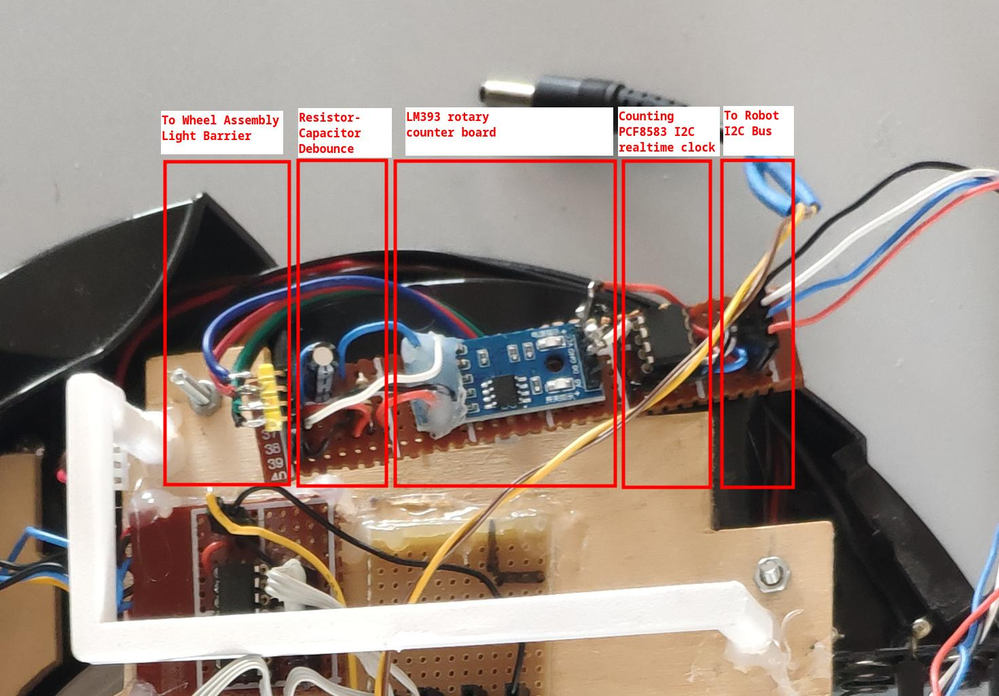

What
Last time around we added wheel odometry sensing using a custom optical encoder disk, debouncing circuitry and two PCF8583 I2C realtime clock chips for counting. The mechanics worked well, but the circuit occasionally misscounted and debouncing signals in hardware is tricky. Another approach is to use a microcontroller and debounce in software. This is what I am now moving to for more reliability.
Contents
Contents
When
Almost exactly one year ago I had made some progress on the wheel odometry sensors of the robot. At the time I wanted to use a more or less discrete circuitry using mostly off-the-shelf components instead of programming an additional microcontroller. It seemed overkill for the application.
While in principle the combination of a LM393 rotary counter board with a PCF8583 I2C realtime clock chip works, it would often over-count. I added an resistor-capacitor (RC)-circuit to debounce, but calibrating that, even with the oscilloscope turned out to be tedious.
A year has passed since and I suddenly felt motivated to solder an attiny2313 circuit to a perfboard. With an ISP pin header we can program the chip in-circuit with the AVR AVRISP mkII programmer. Just like in the early days before Arduino became popular.
Background
Design Goals
To recap I imposed some design goals for this robot in order to ensure
- simplicity
- reliability
- and easy maintainance
For this I aim for
- modularity - every funcational component can be removed to separately test it. Even the core microcontroller can be swapped for another. This is achieveed by having all sensor and actuator controls as adressable I2C slaves on a main system bus.
- low complexity of the robot - a web-interface on the robot provides only raw sensor data as JSON, the ability to control the robot and a video stream. All complex algorithms are handled on a computer that connects to the robot only via WiFi. This way data can easily be recorded and replayed.
- simplistic programming - in the program of the main processor I’ve decided to keep the entire state in a single key-value store. The store can be read from and written to via JSON. The built-in webserver allows the JSON to be read via simple HTTP-GET and written to via HTTP-PUT requests.
Even though the circuit for the wheel odometry counter needs to be a little more complex due to the use of an auxilary microcontroller, we will stay true to these design goals. The auxilary microcontroller will communicate with the main microcontroller as an I2C slave.
Hardware
Let’s first have a look at the modifactions I made to the hardware.
Old circuit uses a realtime clock counter
The old circuit we will be replacing using the debouncing circuit, LM393 rotary counter board and PCF8583 I2C realtime clock.
New circuit uses an Attiny2313 as a custom I2C slave
The new board sits in the back of the robot. I’ve removed the two old boards from my previous blog post.
The circuit became a little more complex due to the use of the microcontroller.
We need
- the microcontroller itself
- power to the microcontroller
- the 6-pin ISP programming header
- a test LED for debugging the clock configuration
- connectors to the wheel assembly light barriers with their respective resistors
But still very manageable.
Wiring
After almost a year I had of course completly forgotton the pin configurations of the old board.
What I usually do is create a drawing in kolour paint and just screenshot all the information I need to have at a glance during soldering.

Tests
On the hardware side we can run test three things immediatly:
- chip programmable
- led blinking
- signal from the wheel encoder
Programmable
If all is connected correctly, then the AVR mkII programmer will be able to write software to the chip.
Wheel Ticks
Probing the input pin of the two light barriers with the motors running reveals a clean enough signal the microcontroller shouldn’t have much trouble picking up. The signal is similar for both wheels.
Software
The software side was a little annoying:
- the AVR MkII programmer had a broken ribbon cable I had to fix
- the arduino-cli and -ide have a “feature” to copy all *.ino files in a directory together into one souce file for compilation which caused strange behaviour with code I had purposely set aside.
- some bad solder spots were causing sporadic issues when programming the chip
- we need to keep in mind to remove the SDA/SCL lines from the main processor as they are also used during programming
With those issues fixed the rest was relatively straight forward.
Script to upload code
To conviniently push code to the microcontroller I use a bash script. It installs everything that is required: the arduino-cli and the attiny core. It then compiles and uploads the sketch. All conveniently from command-line in an easily reprocudable manner.
#!/bin/bash
set -e
# -- enter project directory
cd $HOME/odometry/
# -- get arduino-cli
wget -O $HOME/arduino-cli_1.3.1.tar.gz https://github.com/arduino/arduino-cli/releases/download/v1.3.1/arduino-cli_1.3.1_Linux_64bit.tar.gz
tar -xvf tar -xvf arduino-cli_1.3.1.tar.gz
# -- setup tool paths
ACLI=$HOME/arduino-cli
AVRD=$HOME/.arduino15/packages/arduino/tools/avrdude/6.3.0-arduino17/bin/avrdude
ACRDC=$HOME/.arduino15/packages/arduino/tools/avrdude/6.3.0-arduino17/etc/avrdude.conf
# -- add board manager url for attiny
$ACLI config add board_manager.additional_urls http://drazzy.com/package_drazzy.com_index.json
# -- install the core
$ACLI core install ATTinyCore:avr
# -- compile code
$ACLI compile --verbose --fqbn ATTinyCore:avr:attinyx313:chip=2313 software/software.ino
# -- upload with mkii programmer
$ACLI upload --verbose --fqbn ATTinyCore:avr:attinyx313:chip=2313 --programmer avrispmkii software/software.ino
If writing software to the microcontroller works it will look like this in the terminal:
Some additional helpful commands
In order to figure out the command-lines there are some not so intuitive paramters to arduino-cli and avrdude for setting fuses, if required.
Finding the correct part specifiers
In order to figure out the fqbn, after having the board manager setup, we can search for a core to install like this:
# -- search for core
$ACLI core search attiny
and then search for compatible boards within the cores
# -- search compatible board
$ACLI board listall 2313
This yields ATTinyCore:avr:attinyx313. Interestingly, with the ATTinyCore core we the attinyx313 is for the almost identical attiny4313 and attiny2313. We need to use the chip option.
Using the details parameter we can get such options.
# -- search option to select chip
$ACLI board details --fqbn --fqbn ATTinyCore:avr:attinyx313
This prints ATtiny2313/ATtiny2313A with the option chip=2313 as seen in the script above.
Reading and writing fuses
We may want to read the internal clock settings (fuses)
# -- read fuses
$AVRD -C ../etc/avrdude.conf -c avrispmkII -p attiny2313 -v
Set the fuses. There is a convenient online calculator to get the fuse values here [1].
# -- set fuses
$AVRD -C $ACRDC -c avrispmkII -p attiny2313 -U lfuse:w:0x62:m -U hfuse:w:0xDF:m -U efuse:w:0xFF:m -U lock:w:0xFF:m
If we additionaly connect the TTL pins to the FTDI and use Serial.print(...) in the software we may want to open the serial console.
# -- open serial console
$ACLI monitor -p /dev/ttyUSB0 -c baudrate=115200
Tests
I ran some simple test cases to make sure the circuit behaves as expected. The goal was to check if the chip can be programmed, the clock is configured correctly and that the built-in hardware I2C functionality works.
LED Blink Test
At some point the bring-up worked out and I got that LED to blink. Measuring the signal at the LED pin revealed the internal oscillator in the micro-controller is correctly configured.
#define F_CPU 1000000UL
#define LED_PIN PB4
#include <avr/io.h>
#include <util/delay.h>
int main (void) {
DDRB = (1 << LED_PIN); // PB3 output
while(1) {
PORTB |= (1 << LED_PIN); // on
_delay_ms(500);
PORTB &= ~(1 << LED_PIN); // off
_delay_ms(500);
}
}
Having the LED blink is an important milestone, because it demonstrated:
- compilation works
- power works
- programming works
- chip is alive
- internal clock/fuse bits are set to the correct rate (verified with oscilloscop on the LED pin)
I2C Slave Test
The following code set the Attiny2313 to act as an I2C slave.
#define F_CPU 1000000UL
#define LED_PIN PB4
#include <avr/io.h>
#include <util/delay.h>
#include <Wire.h>
byte RxByte;
void I2C_RxHandler(int numBytes) {
while(Wire.available()) {
RxByte = Wire.read();
}
}
void setup() {
DDRB = (1 << LED_PIN); // PB3 output
Wire.begin(0x55); // slave address 0x55
Wire.onReceive(I2C_RxHandler);
}
void loop() {
PORTB |= (1 << LED_PIN); // on
_delay_ms(100);
PORTB &= ~(1 << LED_PIN); // off
_delay_ms(100);
}
In the webinterface of the main processor we can then see an I2C slave show up under the adress 0x55.
Note the wheel counts shown are currently both at a fixed high number due to read failure, because the old wheel odometry sensors are removed and the new one has yet to be programmed.
Complete Firmware
With the basics out of the way it’s time to update the firmware on the main esp32cam processor and the attiny2313 auxiliary odometry controller.
Main Processor
In the code for the main processor I just read 4 consecutive bytes via I2C from the attiny2313.
String CWheelRotaryCounter::read() {
// --request 4 bytes from I2C slave with adress 0x55
uint16_t value;
byte arr[4];
Wire.requestFrom(0x55, 4);
// -- read 4 consecutive bytes
for(int i = 0; i < 4; i++) {
arr[i] = Wire.read();
}
// -- convert to 16bit unsigned integer
if(m_wheelno == 0) {
value = arr[0];
value = (value << 8) | arr[1];
} else if(m_wheelno == 1) {
value = arr[2];
value = (value << 8) | arr[3];
} else {
return String(-1);
}
return String(value);
}
Note: the value is an unsigned count of the interrupts of the light barrier disc. For odometry in ROS we need to use a signed integer and add/subtract the difference of the previous count depending on the direction the motor in turning in.
Odometry Controller
For the odometry controller I’ve enabled interrupts on for pins PB2 and PB3. In the interrupt handler I can then check if there was a change.
Normally we could use attachInterrupt(digitalPinToInterrupt(2), onWheelTickLeft, RISING); and define a function onWheelTickLeft, but on first try I wasn’t able to get that to work. So I went old fashioned route and set the flags on the registers manually. The variable PCIE isn’t defined, so I checked the datasheet of the attiny2313, saw that it is set to 5 and defined the value myself.
volatile uint16_t m_wheelTickLeftCount = 0;
volatile uint16_t m_wheelTickRightCount = 0;
volatile bool m_lastStateLeft = false;
volatile bool m_lastStateRight = false;
#define PCIE 5
void setup() {
(..)
// -- set pins for wheel ticks as input
pinMode(PB2, INPUT);
pinMode(PB3, INPUT);
// -- configure external interrupt for PCINT2 (=PB2) and PCINT3 (=PB3)
PCMSK |= (1<<PCINT2) | (1<<PCINT3);
MCUCR |= (1<<ISC01) | (1<<ISC00);
GIMSK |= (1<<PCIE);
}
ISR (PCINT0_vect) {
bool currentStateLeft = false;
bool currentStateRight = false;
// -- read current states
if (PINB & (1 << PCINT2)) {
currentStateLeft = true;
}
if (PINB & (1 << PCINT3)) {
currentStateRight = true;
}
// -- if there was a change, increment respective counter
if(currentStateLeft != m_lastStateLeft) {
m_wheelTickLeftCount++;
}
if(currentStateRight != m_lastStateRight) {
m_wheelTickRightCount++;
}
// -- remember current state
m_lastStateLeft = currentStateLeft;
m_lastStateRight = currentStateRight;
}
Then to transfer the data via I2C I define a onI2CRequest function that sends converts both 16-bit tick counts to four bytes by bit-shifting and sends them out.
void onI2CRequest() {
byte arr[4];
arr[0] = (m_wheelTickLeftCount >> 8) & 0xFF;
arr[1] = m_wheelTickLeftCount & 0xFF;
arr[2] = (m_wheelTickRightCount >> 8) & 0xFF;
arr[3] = m_wheelTickRightCount & 0xFF;
Wire.write(arr, 4);
}
In the setup() function we enable the I2C slave functionality with
Wire.begin(0x55);
Wire.onRequest(onI2CRequest);
Not much more is required for this to work. When driving the robot around I can now see the wheel_count_left and wheel_count_right changing.
Progress
Conclusion
Roughly a year ago I got the 360 degree lidar working in the robotic operating system (ROS). The SLAM algorithms additionally require wheel odometry. With the wheel odometry now working, I can move on to configuring the SLAM algorithms.
1] http://eleccelerator.com/fusecalc/fusecalc.php?chip=attiny2313